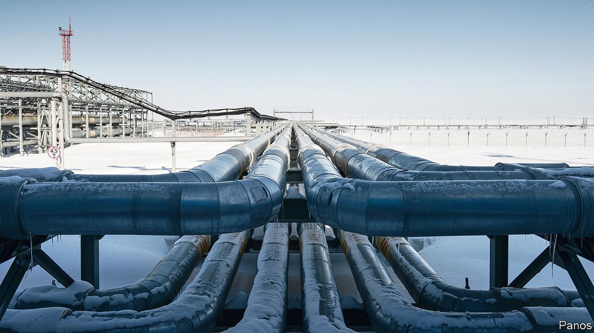
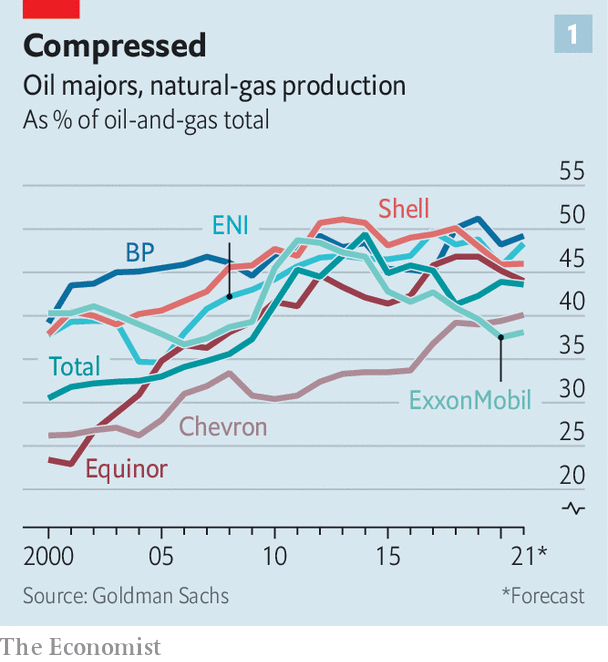
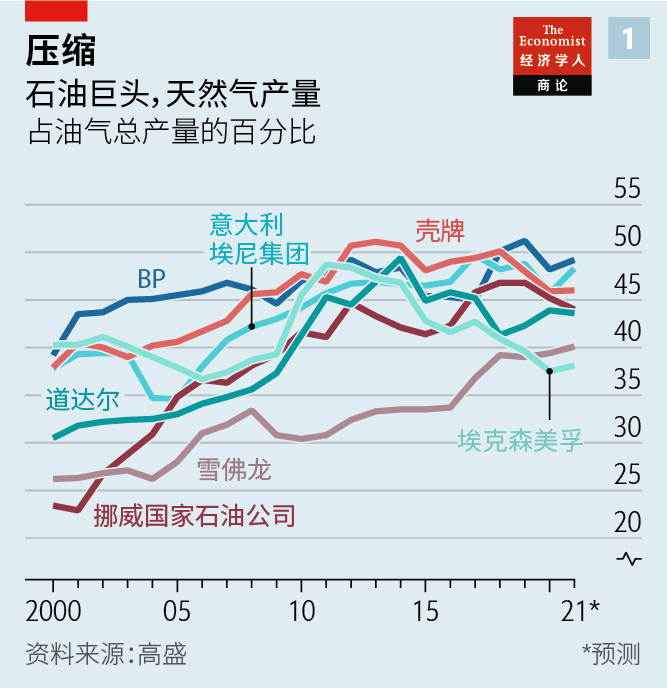
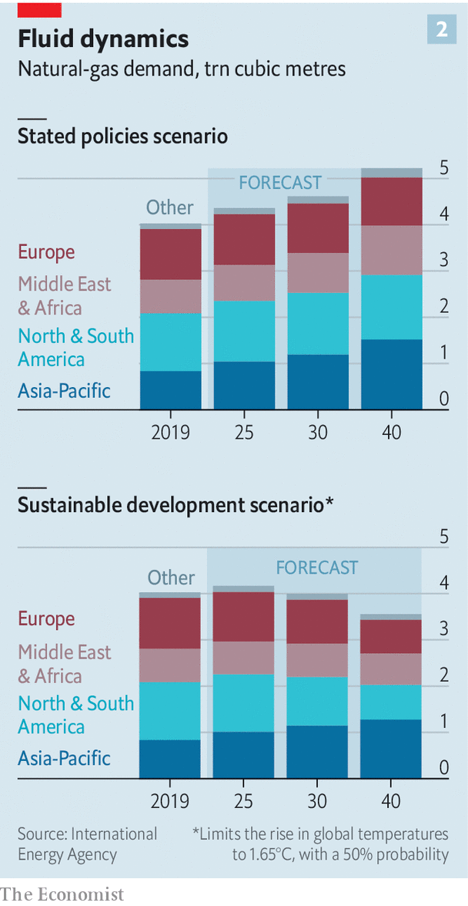
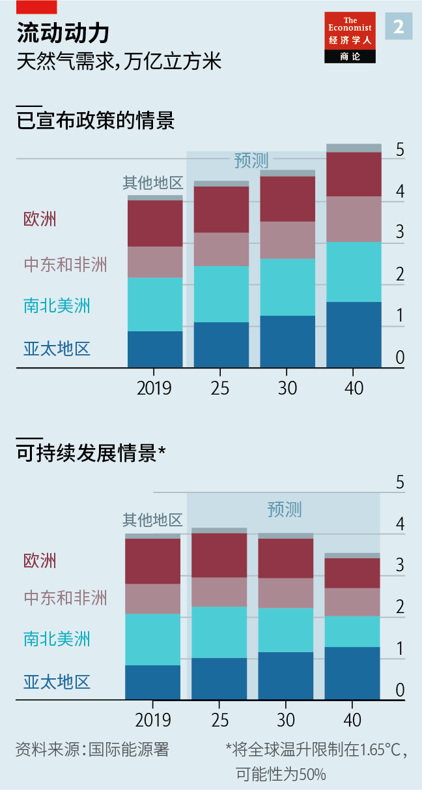

2021-05-06T14:27:36+00:00
The energy transition
能源转型
能源轉型
Oil supermajors’ mega-bet on natural gas
石油巨头对天然气的巨额押注
石油巨頭對天然氣的巨額押注
Is the least grubby hydrocarbon a bridge fuel to a greener future, or a trap?
这种污染最少的烃类燃料是通往更环保未来的桥梁还是陷阱？
這種污染最少的烴類燃料是通往更環保未來的橋樑還是陷阱？
ENERGY COMPANIES have no seat at the climate high table convened by President Joe Biden on April 22nd and 23rd, to which he has invited 40 other world leaders to discuss how to speed up the shift from dirty energy. From the sidelines, coal firms will scowl at efforts to curb demand in Asia and oil drillers will wince at support for electric cars. Watching particularly closely will be those companies which have bet big on natural gas. As the energy transition gathers momentum, no fuel’s future is hazier than that of the least grubby hydrocarbon.
美国总统拜登于4月22日和23日召开气候峰会，邀请40位世界领导人讨论如何加速从肮脏能源的转型，能源公司人士不在其中。从旁观望的煤炭企业会对抑制亚洲需求的努力皱眉，石油钻探商会对支持电动汽车的举措感到不适。而尤其密切关注会议动向的将是那些对天然气押下重注的公司。随着能源转型势头渐起，相比其他燃料，天然气这种污染最少的烃类燃料的未来最为扑朔迷离。
美國總統拜登於4月22日和23日召開氣候峰會，邀請40位世界領導人討論如何加速從骯髒能源的轉型，能源公司人士不在其中。從旁觀望的煤炭企業會對抑制亞洲需求的努力皺眉，石油鑽探商會對支持電動汽車的舉措感到不適。而尤其密切關注會議動向的將是那些對天然氣押下重注的公司。隨着能源轉型勢頭漸起，相比其他燃料，天然氣這種污染最少的烴類燃料的未來最為撲朔迷離。
Proponents see gas as the “bridge fuel” to a greener world. They include the five largest international oil firms: ExxonMobil, Chevron, Royal Dutch Shell, Total and BP. These supermajors saw gas rise from 39% of their combined hydrocarbon output in 2007 to 44% in 2019 (see chart 1). That year producers approved a record level of liquefied natural gas (LNG) capacity. Those projects will come online in a few years. Shell, which in 2016 paid $53bn for BG, a British gas group, now says its oil production peaked in 2019, but that it will expand its gas business with annual investments of about $4bn. Total expects its crude output to sink over the next decade, but for gas to rise from 40% to 50% of sales. In February Qatar Petroleum, a state-owned giant, said it would begin the largest LNG project in history.
天然气的支持者视之为通往更环保世界的“过渡性燃料”。它们包括埃克森美孚、雪佛龙、荷兰皇家壳牌、道达尔和BP这五家最大的国际石油公司。这些巨头的天然气产量从2007年占其烃类燃料总产量的39%上升到2019年的44%（见图表1）。2019年，生产商们核准建设的液化天然气（LNG）产能达到历史最高水平。这些项目将在几年内上马。壳牌在2016年斥资530亿美元收购了英国天然气集团BG，它目前表示自己的石油产量已在2019年达到峰值，但它计划每年投资约40亿美元来扩大天然气业务。道达尔预计，未来十年，自己的原油产量将下降，但天然气的销量占比将从40%上升到50%。今年2月，国有巨头卡塔尔石油公司（Qatar Petroleum）表示将启动史上最大的LNG工程。
天然氣的支持者視之為通往更環保世界的“過渡性燃料”。它們包括埃克森美孚、雪佛龍、荷蘭皇家殼牌、道達爾和BP這五家最大的國際石油公司。這些巨頭的天然氣產量從2007年占其烴類燃料總產量的39%上升到2019年的44%（見圖表1）。2019年，生產商們核准建設的液化天然氣（LNG）產能達到歷史最高水平。這些項目將在幾年內上馬。殼牌在2016年斥資530億美元收購了英國天然氣集團BG，它目前表示自己的石油產量已在2019年達到峰值，但它計劃每年投資約40億美元來擴大天然氣業務。道達爾預計，未來十年，自己的原油產量將下降，但天然氣的銷量佔比將從40%上升到50%。今年2月，國有巨頭卡塔爾石油公司（Qatar Petroleum）表示將啟動史上最大的LNG工程。
Yet debate is intensifying over whether gas will be a bridge or a dead end. Mr Biden and his counterparts elsewhere appear to be serious about achieving net-zero emissions by 2050. That would require accelerating the phase-out of all fossil fuels, gas included, unless paired with technology to capture and store emissions. Inexpensive wind and solar power already threaten gas-fired electricity, particularly in America and Europe. Even as demand looks uncertain, cheap gas from state-owned firms such as Qatar’s will add to global supply. Some companies’ bets will go bad.
然而，关于天然气到底是过渡的桥梁还是死胡同，争论越发激烈。对于到2050年实现净零排放的目标，拜登和其他国家的领导人看起来是认真的。这将需要加速淘汰包括天然气在内的所有化石燃料，除非配有排放捕获和存储技术。不再昂贵的风能和太阳能已经对燃气发电构成了威胁，尤其是在美国和欧洲。即便此时市场需求看上去并不确定，卡塔尔石油公司等国有企业生产的廉价天然气将提高全球供应量。一些公司的赌注将落空。
然而，關於天然氣到底是過渡的橋樑還是死胡同，爭論越發激烈。對於到2050年實現凈零排放的目標，拜登和其他國家的領導人看起來是認真的。這將需要加速淘汰包括天然氣在內的所有化石燃料，除非配有排放捕獲和存儲技術。不再昂貴的風能和太陽能已經對燃氣發電構成了威脅，尤其是在美國和歐洲。即便此時市場需求看上去並不確定，卡塔爾石油公司等國有企業生產的廉價天然氣將提高全球供應量。一些公司的賭注將落空。
On the demand side, gas remains a sensible gamble in some ways. A gas-fired power plant belches about half the emissions of a coal-fired one per unit of energy. The fuel benefits from diverse sources of demand, too. In addition to producing electricity, gas is used to make fertiliser and generate heat for buildings and industry. Unlike exhaust from a car, emissions from a factory can theoretically be captured and stored below ground. Gas can also be used to generate hydrogen, which may in turn serve as a form of long-term energy storage.
从需求看，天然气在某种程度上仍然值得一赌。燃气发电厂每单位能源产生的排放物是燃煤发电厂的一半左右。对天然气的需求也很多样，这也是它的一个优势。除了发电，天然气还可以用来制造肥料、为建筑物和工业生产供暖。与汽车尾气不同，工厂的排放理论上可以被捕获并储存在地下。天然气还可以用来制取氢气，而氢气可能成为一种长期存储能源的形式。
從需求看，天然氣在某種程度上仍然值得一賭。燃氣發電廠每單位能源產生的排放物是燃煤發電廠的一半左右。對天然氣的需求也很多樣，這也是它的一個優勢。除了發電，天然氣還可以用來製造肥料、為建築物和工業生產供暖。與汽車尾氣不同，工廠的排放理論上可以被捕獲並儲存在地下。天然氣還可以用來製取氫氣，而氫氣可能成為一種長期存儲能源的形式。
However, companies’ investments have not always gone as planned. A rush for gas between 2008 and 2014 was part of a broader stampede by energy giants, as higher energy prices spurred investments with little regard for costs, explains Michele Della Vigna of Goldman Sachs, an investment bank. In 2019 Chevron said it would write down as much as $11bn, largely owing to underperforming shale-gas assets in Appalachia. Gas comprised the bulk of the $15bn-22bn of impairments announced by Shell last June. In November ExxonMobil said it would write down the value of its gas portfolio by $17bn-20bn, its biggest impairment ever. Its $41bn purchase in 2010 of XTO Energy, a shale-gas company, may be the worst-timed investment made by an oil major in the past 20 years.
然而，企业的投资并不总能按计划发展。2008年至2014年的天然气热潮是能源巨头们更广泛投资狂热的一部分——能源价格上涨刺激了投资，成本问题几乎被抛诸脑后，投资银行高盛的米凯莱·德拉维尼亚（Michele Della Vigna）解释说。2019年，雪佛龙表示将减记多达110亿美元的资产，主因是美国阿巴拉契亚地区的页岩气资产表现不佳。壳牌去年6月宣布减记150亿至220亿美元的资产价值，其中天然气占了一大部分。去年11月，埃克森美孚表示将对天然气投资组合的价值减记170亿至200亿美元，这是该公司有史以来最大的资产减记。2010年，它以410亿美元收购了页岩气公司XTO Energy，这可能是过去20年中石油巨头择时最糟的一次投资。
然而，企業的投資並不總能按計劃發展。2008年至2014年的天然氣熱潮是能源巨頭們更廣泛投資狂熱的一部分——能源價格上漲刺激了投資，成本問題幾乎被拋諸腦後，投資銀行高盛的米凱萊·德拉維尼亞（Michele Della Vigna）解釋說。2019年，雪佛龍表示將減記多達110億美元的資產，主因是美國阿巴拉契亞地區的頁岩氣資產表現不佳。殼牌去年6月宣布減記150億至220億美元的資產價值，其中天然氣佔了一大部分。去年11月，埃克森美孚表示將對天然氣投資組合的價值減記170億至200億美元，這是該公司有史以來最大的資產減記。2010年，它以410億美元收購了頁岩氣公司XTO Energy，這可能是過去20年中石油巨頭擇時最糟的一次投資。
Two big questions now hang over future demand, each difficult to answer with any certainty. The first is how fast governments limit carbon emissions. The extraction, liquefaction and transport of gas produce their own emissions, on top of those from its eventual combustion. Gas production also releases methane, a greenhouse gas that is about 80 times more potent than carbon dioxide over a 20-year period. Adding methane leaks from fracking or pipelines, the Natural Resources Defence Council, an environmental group, calculates that American LNG exports in the next decade may produce greenhouse gases equivalent to the annual emissions of about 45m new cars—not counting burning the stuff for energy.
对于未来的需求，目前有两大问题悬而未决，每个问题都很难有确切答案。首先是政府限制碳排放的进展速度。在最终燃烧产生的排放外，天然气的提取、液化和运输本身也会产生排放。天然气生产还会排放甲烷，这种温室气体在20年跨度里的温室效应大约是二氧化碳的80倍。加上水力压裂和管道泄漏的甲烷，环保组织自然资源保护协会（Natural Resources Defence Council）估计，美国未来十年的LNG出口可能产生的温室气体相当于约4500万辆新车一年的排放量——这还没有包括燃烧LNG发电的排放。
對於未來的需求，目前有兩大問題懸而未決，每個問題都很難有確切答案。首先是政府限制碳排放的進展速度。在最終燃燒產生的排放外，天然氣的提取、液化和運輸本身也會產生排放。天然氣生產還會排放甲烷，這種溫室氣體在20年跨度里的溫室效應大約是二氧化碳的80倍。加上水力壓裂和管道泄漏的甲烷，環保組織自然資源保護協會（Natural Resources Defence Council）估計，美國未來十年的LNG出口可能產生的溫室氣體相當於約4500萬輛新車一年的排放量——這還沒有包括燃燒LNG發電的排放。
Responding to climate concerns, the Netherlands and some Californian cities have banned gas in new buildings. Britain will do so from 2025. “To put it mildly,” Werner Hoyer, president of the European Investment Bank, declared in January, “gas is over.” John Kerry, Mr Biden’s climate envoy, warned in January that natural-gas assets risked becoming stranded. The International Energy Agency, an intergovernmental group, reckons that demand growth will slow to about 1.2% a year until 2040, from an average of 2.2% in 2010-19. If governments move more aggressively to restrain temperatures, demand could be lower in 2040 than it was in 2019 (see chart 2). BP offers a more bearish scenario: if the world were to reach net-zero emissions by 2050, gas demand would peak within the next few years and nearly halve by mid-century. “For the business to survive,” argues Massimo Di Odoardo of Wood Mackenzie, an energy consultancy, “it’s not just about marketing gas. It’s about marketing gas and managing emissions.”
为了应对气候挑战，荷兰以及加州部分城市已经禁止在新建筑中使用天然气。英国将从2025年开始效法。“毫不夸张地说，”欧洲投资银行（European Investment Bank）的总裁沃纳·霍耶（Werner Hoyer）今年1月宣布，“天然气的日子到头了。”同月，拜登的气候特使约翰·克里（John Kerry）警告，天然气资产面临搁浅的风险。政府间组织国际能源署（International Energy Agency）估计，到2040年，需求增长将从2010年至2019年间的平均每年2.2%减缓到每年1.2%左右。如果各国政府采取更积极的行动来遏制全球变暖，2040年的需求可能会低于2019年（见图表2）。BP提出了一个更悲观的前景：如果世界到2050年实现净零排放，天然气需求将在未来几年内达到峰值，到本世纪中叶几乎减半。“这个行业若要生存下去，”能源咨询公司Wood Mackenzie的马西莫·迪奥多尔多（Massimo Di Odoardo）认为，“重要的不仅仅是营销天然气，而是营销天然气和管理排放。”
為了應對氣候挑戰，荷蘭以及加州部分城市已經禁止在新建築中使用天然氣。英國將從2025年開始效法。“毫不誇張地說，”歐洲投資銀行（European Investment Bank）的總裁沃納·霍耶（Werner Hoyer）今年1月宣布，“天然氣的日子到頭了。”同月，拜登的氣候特使約翰·克里（John Kerry）警告，天然氣資產面臨擱淺的風險。政府間組織國際能源署（International Energy Agency）估計，到2040年，需求增長將從2010年至2019年間的平均每年2.2%減緩到每年1.2%左右。如果各國政府採取更積極的行動來遏制全球變暖，2040年的需求可能會低於2019年（見圖表2）。BP提出了一個更悲觀的前景：如果世界到2050年實現凈零排放，天然氣需求將在未來幾年內達到峰值，到本世紀中葉幾乎減半。“這個行業若要生存下去，”能源諮詢公司Wood Mackenzie的馬西莫·迪奧多爾多（Massimo Di Odoardo）認為，“重要的不僅僅是營銷天然氣，而是營銷天然氣和管理排放。”
The second question with respect to demand is how quickly rival technologies advance. Already, about two-thirds of the world’s population lives in places where power from new wind and solar farms is cheaper than from new gas plants, according to BloombergNEF, a data provider. Electric heat pumps threaten gas in buildings. In future, gas with carbon capture and storage (CCS) may prove pricier than hydrogen generated by renewable electricity. Mr Biden’s proposed $2trn infrastructure bill includes support for CCS, but also for things that may challenge gas’s role in industry, power and heating. The European Union aspires to make its members leaders in hydrogen, hoping it could one day replace gas in many applications while using existing pipelines and other infrastructure.
关于需求的第二个问题是替代性技术的进步有多快。数据供应商彭博新能源（BloombergNEF）称，在世界大约三分之二的人口生活的地区，新的风能和太阳能电厂的发电已经比新的天然气电厂更便宜了。电热泵可能会取代建筑物中使用的天然气。未来，带有碳捕获和存储（CCS）的天然气的价格可能会超过利用可再生电力生产的氢气。拜登提出的2万亿美元的基础设施法案中包括对CCS的支持，但也包括可能挑战天然气在工业生产、发电和供暖方面的地位的替代性技术。欧盟渴望让其成员国成为氢气领域的领跑者，希望有朝一日氢气能在许多应用领域取代天然气，同时继续使用现有的管道和其他基础设施。
關於需求的第二個問題是替代性技術的進步有多快。數據供應商彭博新能源（BloombergNEF）稱，在世界大約三分之二的人口生活的地區，新的風能和太陽能電廠的發電已經比新的天然氣電廠更便宜了。電熱泵可能會取代建築物中使用的天然氣。未來，帶有碳捕獲和存儲（CCS）的天然氣的價格可能會超過利用可再生電力生產的氫氣。拜登提出的2萬億美元的基礎設施法案中包括對CCS的支持，但也包括可能挑戰天然氣在工業生產、發電和供暖方面的地位的替代性技術。歐盟渴望讓其成員國成為氫氣領域的領跑者，希望有朝一日氫氣能在許多應用領域取代天然氣，同時繼續使用現有的管道和其他基礎設施。
Then there is the matter of supply. Maarten Wetselaar, Shell’s gas chief, says the industry used to expect the market to be undersupplied and the price set by the marginal buyer. Instead, the world has plenty of gas courtesy of American shale, he notes. On top of that, private firms must compete with state ones in Qatar and Russia, which can extract gas cheaply and have a political imperative to monetise reserves while they can. Qatar’s new project will raise its LNG capacity by 40% by 2026. And a growing spot market and shaky demand have made LNG buyers less interested in traditional long-term contracts. At least a quarter of LNG supply is now uncontracted, estimates Mr Di Odoardo. As approved projects come online, the share of uncontracted LNG may exceed 50% by 2030.
此外还有供应方面的问题。壳牌的天然气业务主管魏思乐（Maarten Wetselaar）表示，业界过去预计天然气的市场供应不足，价格因而由边际买家决定。他指出，实际上正相反，美国的页岩为世界提供了大量的天然气。除此之外，私营企业必须与卡塔尔和俄罗斯的国有企业竞争，而后者能以更低廉的成本开采天然气，而且出于政治上的需要，它们会在可能时将储量变现。到2026年，卡塔尔的新项目将把自己的LNG产能增加40%。而日渐增长的现货市场和不稳定的需求使得LNG买家对传统的长期合同兴趣下降。迪奥多尔多估计，目前至少有四分之一的LNG供应没有签订合同。随着获批项目的上马，到2030年，未签合同的LNG比例可能超过50%。
此外還有供應方面的問題。殼牌的天然氣業務主管魏思樂（Maarten Wetselaar）表示，業界過去預計天然氣的市場供應不足，價格因而由邊際買家決定。他指出，實際上正相反，美國的頁岩為世界提供了大量的天然氣。除此之外，私營企業必須與卡塔爾和俄羅斯的國有企業競爭，而後者能以更低廉的成本開採天然氣，而且出於政治上的需要，它們會在可能時將儲量變現。到2026年，卡塔爾的新項目將把自己的LNG產能增加40%。而日漸增長的現貨市場和不穩定的需求使得LNG買家對傳統的長期合同興趣下降。迪奧多爾多估計，目前至少有四分之一的LNG供應沒有簽訂合同。隨着獲批項目的上馬，到2030年，未簽合同的LNG比例可能超過50%。
All this is prompting some in the industry to rethink their embrace of gas. Last July Dominion Energy, an American utility, cancelled plans for a controversial pipeline and sold its entire pipeline business to Berkshire Hathaway, a huge conglomerate, for $9.7bn. In November Engie, a French energy company, scrapped plans to sign an LNG contract with NextDecade, an American firm, over concerns about shale emissions. Other firms are trying to adapt to a gas business that looks set to grow both more competitive and more complex.
所有这些都在促使一些业内人士重新考虑他们对天然气的投入。去年7月，美国公用事业公司道明尼能源（Dominion Energy）取消了一项有争议的天然气管道计划，并将其整个管道业务以97亿美元的价格出售给了大型企业集团伯克希尔·哈撒韦。去年11月，出于对页岩排放的担忧，法国能源公司Engie取消了与美国公司NextDecade签订一项LNG合同的计划。其他公司也在努力适应一个看上去势必会有更多竞争也更复杂的天然气行业。
所有這些都在促使一些業內人士重新考慮他們對天然氣的投入。去年7月，美國公用事業公司道明尼能源（Dominion Energy）取消了一項有爭議的天然氣管道計劃，並將其整個管道業務以97億美元的價格出售給了大型企業集團伯克希爾·哈撒韋。去年11月，出於對頁岩排放的擔憂，法國能源公司Engie取消了與美國公司NextDecade簽訂一項LNG合同的計劃。其他公司也在努力適應一個看上去勢必會有更多競爭也更複雜的天然氣行業。
Big players are now applying a higher cost of capital to their hydrocarbon investments, with a greater focus on profitability, notes Mr Della Vigna. Scale is turning to their advantage, too.
德拉维尼亚指出，现在大公司为烃类燃料投资付出更高的资本成本，同时更加注重盈利能力。规模也正在成为它们的优势。
德拉維尼亞指出，現在大公司為烴類燃料投資付出更高的資本成本，同時更加註重盈利能力。規模也正在成為它們的優勢。
Shell’s share of gas production actually fell in recent years, as it sold off less profitable gas assets in America and Nigeria. Mr Wetselaar maintains that Shell is well positioned to deal with the market’s new realities. Unlike smaller players, which depend on long-term supply contracts to attract financing for new projects, Shell can use its balance-sheet. Trading capabilities make it easier to sell LNG to diverse buyers. For those who want zero-emissions energy, Shell has already sold ten “carbon neutral” LNG cargoes, paired with offsets. Total plans to double its LNG sales over the coming decade, while touting its plans to reduce methane emissions. ExxonMobil reckons that its new investments in CCS will both limit emissions and support its traditional business.
由于出售了在美国和尼日利亚的利润较低的天然气资产，近年来壳牌的天然气产量的份额实际上有所下降。魏思乐坚称，壳牌已做好了应对市场新形势的准备。和依赖长期供应合同来为新项目吸引融资的小公司不同，壳牌可以利用自己的资产负债表。强大的交易能力让它更容易向形形色色的买家出售LNG。对那些想要零排放能源的买家，壳牌已经售出了10船“碳中和”（即相应碳排放已被抵消）的LNG。道达尔计划在未来十年将其LNG销量翻番，同时大力宣传自己减少甲烷排放的计划。埃克森美孚认为，自己在CCS上的新投资既能限制排放，又能支持自己的传统业务。
由於出售了在美國和尼日利亞的利潤較低的天然氣資產，近年來殼牌的天然氣產量的份額實際上有所下降。魏思樂堅稱，殼牌已做好了應對市場新形勢的準備。和依賴長期供應合同來為新項目吸引融資的小公司不同，殼牌可以利用自己的資產負債表。強大的交易能力讓它更容易向形形色色的買家出售LNG。對那些想要零排放能源的買家，殼牌已經售出了10船“碳中和”（即相應碳排放已被抵消）的LNG。道達爾計劃在未來十年將其LNG銷量翻番，同時大力宣傳自己減少甲烷排放的計劃。埃克森美孚認為，自己在CCS上的新投資既能限制排放，又能支持自己的傳統業務。
Such plans are unlikely to sway those who want investment in all fossil fuels to plunge. Companies’ plans can be disrupted by any number of forces—in March an attack in Mozambique prompted Total to suspend a giant LNG project there. The changing market means only the safest, most profitable projects backed by the strongest firms are likely to move forward.
这类计划不太可能说服那些希望所有化石燃料投资都大幅下降的人。公司计划可能会受到许多力量的干扰——3月，莫桑比克的一次袭击事件让道达尔暂停了当地的一个大型LNG项目。不断变化的市场意味着只有实力最强的公司所支持的最安全、最赚钱的项目才有较大的可能向前推进。
這類計劃不太可能說服那些希望所有化石燃料投資都大幅下降的人。公司計劃可能會受到許多力量的干擾——3月，莫桑比克的一次襲擊事件讓道達爾暫停了當地的一個大型LNG項目。不斷變化的市場意味着只有實力最強的公司所支持的最安全、最賺錢的項目才有較大的可能向前推進。
NextDecade, having failed to secure Engie as a client, has delayed a final investment decision on a proposed facility in Texas and scrapped another. It had sought to build an LNG import terminal in Ireland but in January Irish officials let a preliminary agreement with NextDecade expire. Gas may not quite be over. But the industry could soon be defined not by the projects that advance but those that don’t. ■
没能把Engie变成客户的NextDecade已经推迟了对得克萨斯州一项提议设施的最终投资决定，并取消了对另一项设施的投资。它曾试图在爱尔兰建造一个LNG进口接收站，但今年1月爱尔兰官员没有延续双方一个到期的初步协议。天然气的日子可能还没有完全到头，但是这个行业可能很快就要由那些未能推进而不是正在推进的项目来定义了。
沒能把Engie變成客戶的NextDecade已經推遲了對得克薩斯州一項提議設施的最終投資決定，並取消了對另一項設施的投資。它曾試圖在愛爾蘭建造一個LNG進口接收站，但今年1月愛爾蘭官員沒有延續雙方一個到期的初步協議。天然氣的日子可能還沒有完全到頭，但是這個行業可能很快就要由那些未能推進而不是正在推進的項目來定義了。